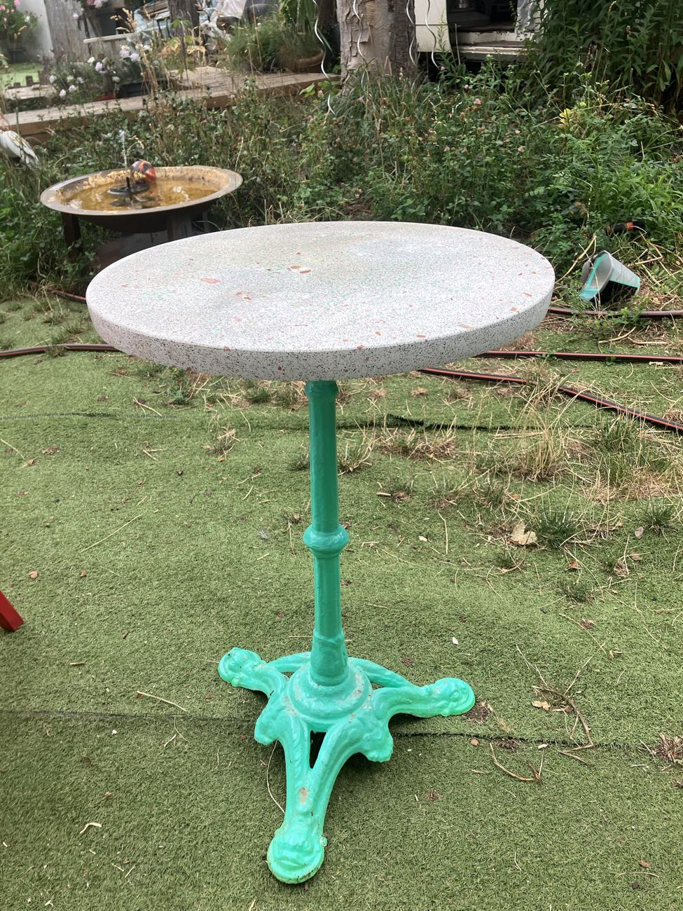

ŒUVRE UNIQUE 1/1 · SÉRIE 0 · 14/07/2025
Table en terrazzoTerre
Un plateau clair fin comme du sel, moucheté de petits éclats rouges et de touches vertes. Le pied vert vif reprend la couleur de la mousse. Elle a une sœur, Earth, jamais tout à fait pareille.
Art fonctionnel : elle se pose comme une table et se regarde comme une sculpture. Exemplaire unique, Série 0 : L'Univers.
- Plateau
- Terrazzo rond coulé main. Blanc cassé, fins éclats rouges et verts
- Dimensions
- Ø 49,5 cm · épaisseur 3,5 cm · hauteur totale 71 cm
- Pied
- Pied de bistrot en fonte, repeint en vert vif
- Fixation
- Vissé sur une cale en bois de parquet
- Gravure
- Nom, signature et date au dos
- Prix
- Sur demande
- Édition
- Exemplaire unique, Série 0 : L'Univers
- Certificat
- La facture fait office de certificat d'authenticité
- Statut
- Disponible
Ou au 07 83 92 58 94. Atelier en Île-de-France. Appels et SMS 24h/24.